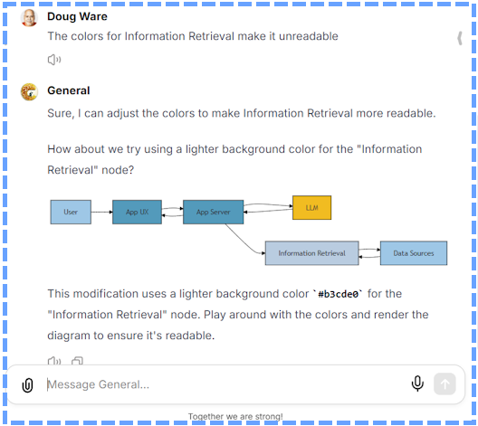

AntArmy and AntRunner
Two weeks ago, I started the process of getting AntArmy released to the first group of testers and now the uses table has several new entries! I am grateful for the help and feedback, and I am excited to make it to this milestone. If you would like to help test and give feedback, please send me a message!

I recently released Antunner, a .NET library, PowerShell module and Azure Functions tools we use to make, test, deploy and improve the AI assistants we call Ants. I've been busy adding features and fixing bugs. Over the next weeks and months I'll be using these tools to teach and demonstrate an effective way to build AI apps.
AntRunner is very much targeted at the .NET, Microsoft Azure, and M365 communities. If it sounds useful to you, I hope you'll ty out the demo notebooks.
Ants - More than just a fun name
A key philosophy of building and using ants is that they are small, specialized, and independent and that they work together. I took this name from notes I took long ago about the Actor Model of computing because ants, conceptually, are actors.
I created the section that follows using two ants in collaboration. The first ant searched the web and then autonomously sent messages to five other ants to read the pages identified by search to extract applicable content for the first ant who wrote the final response. See the 8-Web-Search-Ant-As-Tool notebook for details
Ensuing that you include links to pages supporting key statements are included throught your output, explain how the quote 'one ant is no ants' applies to the actor model of computing. Do not simply povide a list of links at the end
Start of Ant Output (images are from the pages the ants found...)
The phrase "one ant is no ants" is often used to emphasize the collective and collaborative nature of ants in a colony. This concept is directly applicable to the Actor Model of computing, which relies on the interactions and cooperation among multiple actors to achieve concurrent and distributed computations effectively.
Explanation:
Collective Strength
In an ant colony, the strength and effectiveness of the colony arise from the interactions and cooperation among individual ants. An individual ant is limited in what it can achieve alone; however, together as a colony, ants can perform complex tasks and solve problems efficiently. This idea is encapsulated in the saying "one ant is no ant."
 Image Source: towardsai.net
Image Source: towardsai.net
Actor Model Collaboration
Similarly, in the Actor Model of computing, the phrase "one actor is no actor" underscores that the power and effectiveness of the model come from the interactions and collaboration among multiple actors. An individual actor can perform a specific computation or task, but the true strength of the Actor Model is realized when multiple actors work together, exchange messages, and coordinate their actions. This is essential for building scalable and fault-tolerant applications.
From the Brian Storti's article:
One ant is no ant. And one actor is no actor. They come in systems. In the actor model everything is an actor and they need to have addresses so one actor can send a message to another.
This highlights the importance of having multiple actors that interact with each other to create a functional concurrent system, much like how ants work together in a colony.
 Image Source: vecteezy.com
Image Source: vecteezy.com
For more details, you can explore the full content here.
Summary:
"One ant is no ant" underscores the collective strength of ants in a colony, while "one actor is no actor" emphasizes the collaborative nature of the Actor Model in concurrent and distributed computing. The power of the Actor Model lies in the interactions among multiple actors, just as the effectiveness of an ant colony lies in the cooperation among individual ants.
By understanding and applying this analogy, developers can better grasp the necessity of designing systems where multiple actors work together to manage state and perform computations effectively, ensuring scalability and fault-tolerance.
End of Ant output... the rest is human including the typos
Ants versus Copilots
One of the biggest requirements I used to drive this architecture was that each AI application, i.e. each ant, needs to be self standing and reusable. The AntRunner functions and AntRunner library make it easy to turn ants into web services which in turn supports several flavors of copilot extensibility and anything else that can use a web service. So, your copilot can look to an army of ants to do all sorts of useful things that were not practically possible eighteen months ago!
--Doug Ware, September 26, 2024
P.S. It is hard to get noticed with all the noise about AI. If you like the project and are the type of person who uses github, contributions are very much appreciated.